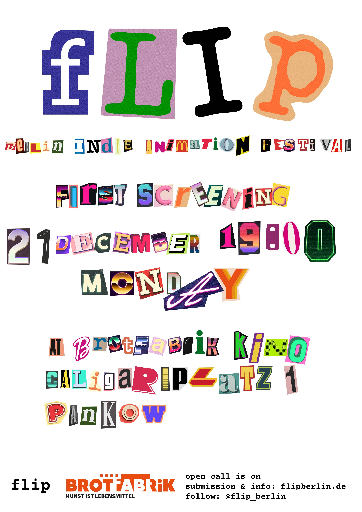

screening #01: the winter solstice assault
Monday, 21 December 2026, 19:00
Brotfabrik Kino (Caligariplatz 1, Pankow)
The sun is giving up at 3:54 PM, Berlin is sinking into cold concrete dusk, and sanity is entirely optional. While the rest of the country quietly celebrates official Short Film Day (Kurzfilmtag), flip takes the dark room at Brotfabrik hostage for its inaugural run.
Program:
- «The Leaf» — Mariya Kostova Marinova, Bulgaria, 2:27
- «Last Summer» — Melis Özgümüş, Ateş Yalaz, Maya Mutlay, Türkiye, 5:45
- «Nibbling of the Night» — Gabi Bania, United Kingdom, 10:00
- «To Be Seen» — Sana Hesham El-Gohary, Egypt, 2:25
- «Due to Delay» — Xianzhi Zhang, China, 3:38
- «Lilith and Eva» — Leila Samari, Maryam Sehhat, Austria, 13:30
- «Penny» — Illyas Arzyne, Belgium, 4:51
- «Tabula Rasa» — Daria Ekimova, Deniz Depecik, Duru Demir, Türkiye, 3:33
- «A River Flows Within Me» — Patricia Moreira, Brazil, 13:00
Admission: Regular cinema tickets available at the door & online via Brotfabrik
Doors: 18:45
Showtime: 19:00 sharp
Format: Curated shorts + casual drinks & post-screening arguments in the bar